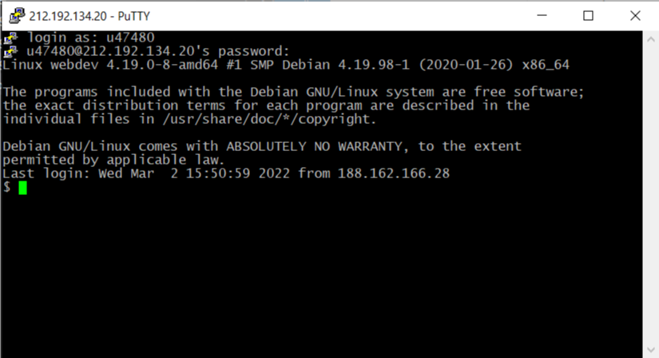
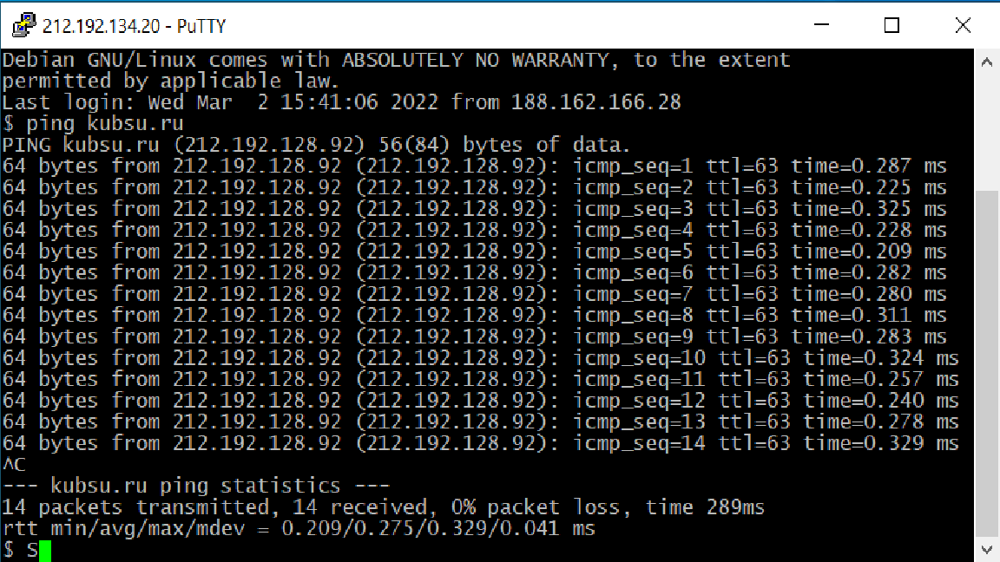
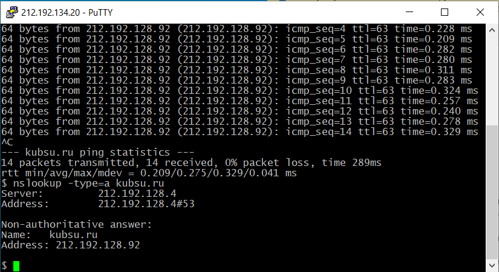
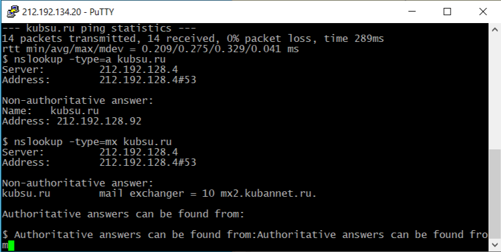
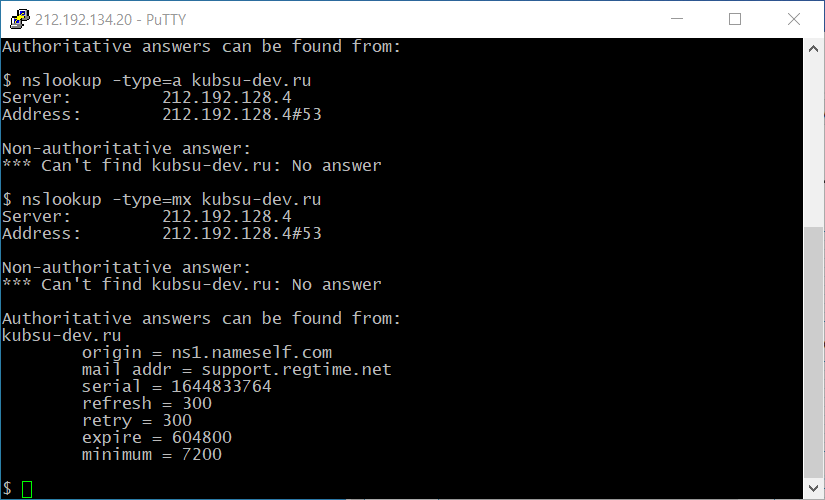
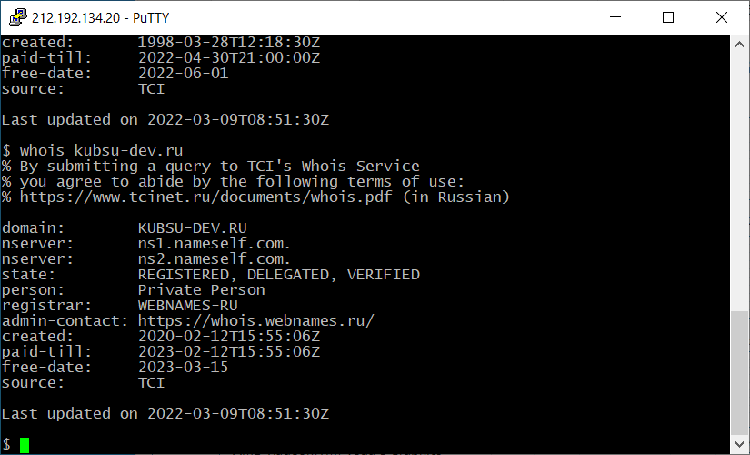
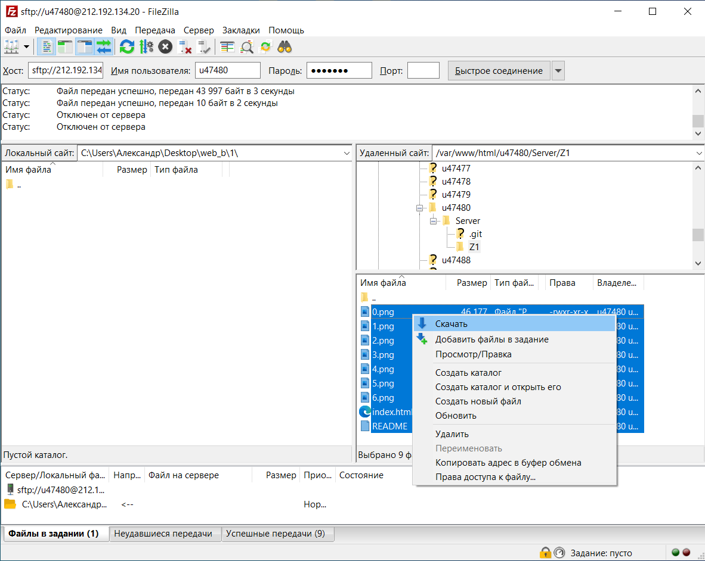
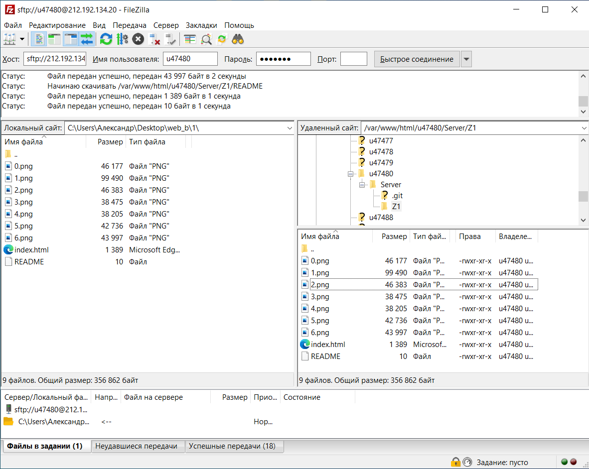

С помощью команды nslookup просмотрим *A-записи домена kubsu.ru:

С помощью команды nslookup просмотрим **MX-записи домена kubsu.ru:

Так же (при помощи nslookup) проверим *A-записи и **MX-записи домена kubsu-dev.ru:

*A-запись — это запись, указывающая соответствие доменного имени и IPv4-адреса.
**MX-запись — это запись, которая обеспечивает работу маршрутизации почты. Она указывает, на какой адрес почтового сервера должна направляться электронная почта.
При помощи команды whois узнаём дату регистрации домена kubsu.ru:

Аналогично для kubsu-dev.ru:

С помощью программы FileZilla соединяемся с учебным сервером (используем свой логин и пароль) по протоколу FTP.

Копироем на локальный компьютер файлы из каталога /var/www/html/мой логин/Server/Z1/
